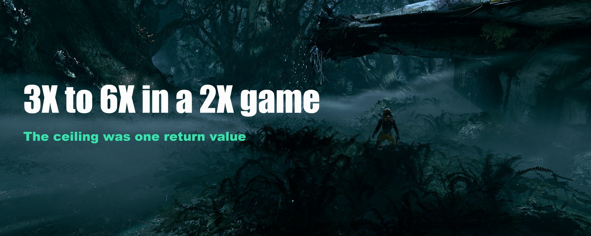

Build write-up
Returnal caps frame generation at 2X. The ceiling was one return value.
Returnal was built against an NVIDIA SDK that predates multi-frame generation, and the game requests exactly one generated frame. The limit is not enforced by the renderer. It comes from a single value the game reads at startup.

The short version
Returnal ships with NVIDIA Streamline 1.3.3. Multi-frame generation needs 2.11 or newer. The proxy sits beside the game and translates the old SDK calls into the new ones while the game runs.
The result is 3X, 4X, 5X or 6X, whichever you set, against a game that shipped 2X as its hard ceiling. The runtime reports its own maximum as five generated frames, which is 6X. Nothing on disk is patched. Deleting two files undoes all of it.

What it changes
On screen the frame counter reads 225 at 2X and 225 at 4X. Both settings saturate the display ceiling, so at the ceiling they are indistinguishable.
The difference is upstream, in how many frames the engine has to draw:
with neural rendering OFF
4X base render 56.2 fps x4 = 224.8 -> 225 on screen
2X base render 112.4 fps x2 = 224.8 -> 225 on screenSame output, half the rendering work. The frame counter cannot show this, because both settings reach the same ceiling.
With DLSS 5 Neural Rendering running in both cases:
with neural rendering ON
4X base render 56.2 fps -> 225 on screen
2X base render 63.0 fps -> 130 on screenThe engine renders fewer real frames and delivers 73 percent more of them.
At 2X, enabling neural rendering costs 49 fps of real rendering, from 112 down to 63. At 4X it costs nothing: 56.2 either way. At 4X the engine needs 56 real frames to fill the display, so there is idle GPU time to absorb the neural pass. At 2X it needs 112, and the cost comes off the frame rate.
A limit that binds at 2X and not at 4X is a GPU-time limit. A CPU or engine bottleneck would have affected both equally.


The three bugs
An inverted return value
The old SDK's initialisation function returns a boolean where true means success. The new one returns a result code where zero means success. Passed through unchanged, every success reads as a failure.
The game stores that answer in a byte, one of three the engine checks before deciding whether the framework is available. With it false the renderer does not register its view extension and does not tag any resources, so frame generation is configured but receives nothing.
This also explains why forcing the support check to return true crashes the game: the function reports success while the globals behind it still hold false, and the module acts on both. The correct fix is at the return value, not at the check.

Reflex markers were not translated
Frame generation requires low-latency mode. The old SDK submits its latency markers through an argument intended for something else, and the values alternate between two constants. Streamline 2.13 rejects the call. The markers have to be translated to the newer mechanism before any frames are generated.
The hook resolved to itself
The proxy intercepts the SDK by hooking the system call that resolves function addresses. Its own code then used that call to find the real functions and received the interceptors instead, so each one called itself.
This surfaces as a stack overflow rather than an access violation, so a debugger set to break on access violations reports nothing and the process exits without a diagnostic.

What it costs
Frame generation is interpolation, so more generated frames means more frames invented between the same two real ones. Check fast camera movement, thin geometry against a bright background, and HUD text before choosing six over four.
Frame generation switches off when the game window loses focus. That is normal behaviour and not a fault. Any reading taken while the game is in the background is wrong.
The test system
GPU. GeForce RTX 5090, 32 GB. This is the only GPU this was built and verified on.
Display. 3840x2160 at 240 Hz. The 225 fps ceiling above is deliberate: with low-latency mode active and VSync on, the frame rate is capped a little under the refresh rate to keep the present queue off the VSync wall.
Also running. DLSS 5 Neural Rendering, and the game native HDR. No ReShade and no RenoDX are involved in any of the frame generation work.
Where to get it
Download it here: https://www.samimirash.com/tools.html
It is free, MIT licensed, and the complete source comes with it.
You supply Streamline 2.13 yourself, from NVIDIA. The game verifies the signature on those files and refuses anything that is not NVIDIA's own signed build.
It works on Returnal and not on other games. It hardcodes offsets into Returnal's own binaries, the specific names its build exports, and the way this game routes its latency markers. Another title differs in all three.